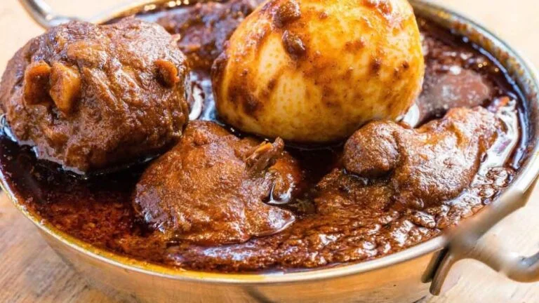

Doro Wot

Description
Doro Wot is an iconic Ethiopian dish that is well known for its savory flavor and aromatic spices. As an essential part of Ethiopian culture, this traditional stew is enjoyed at special occasions and gatherings. The dish is traditionally served over injera, a spongy flatbread made from teff flour.
Ingredients
- 7 lbs skinned and cleaned chicken thighs and drumsticks
- 3 pre-boiled eggs
- 8 finely chopped onions
- 2 cups vegetable oil
- 2 cups water
- 5 tsp garlic powder
- 2 tsp ginger powder
- 1/2 cup berbere
- 2 tsp korerima
- 1/4 cup paprika
- 2 tsp wot kimem (mekelesha)
- 2 tsp salt
Steps
- Begin by adding the garlic powder, ginger powder, onions, and vegetable oil to a large-sized pot; and let the mix simmer at low heat.
- Add paprika and berbere and continue to simmer at the same low heat for up to 20 min. Stir every now and then. Avoid the mix from sticking by adding a little water.
- Add the chicken thighs and drumsticks and simmer some more while also slowly adding the remainder of the water.
- Add the pre-boiled eggs, and finish simmering by adding salt, korerima, and wot kimem (mekelesha).
- Serve your Doro Wot hot.